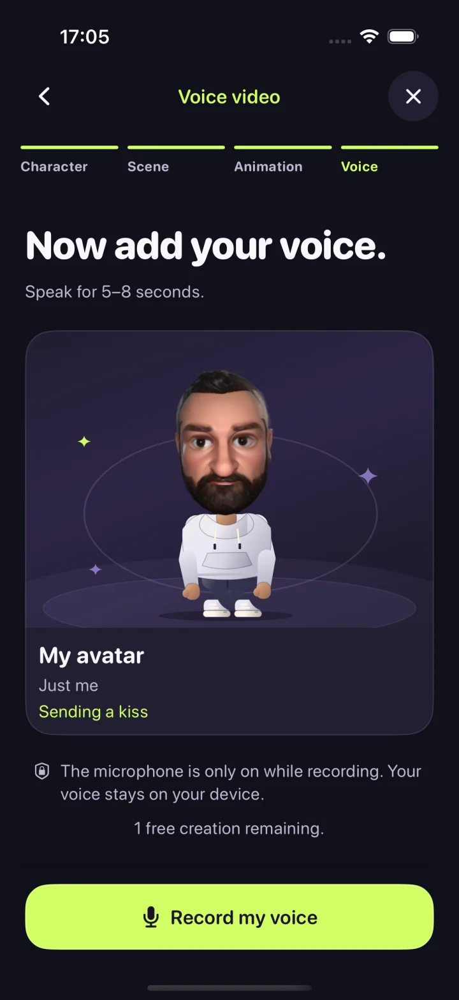
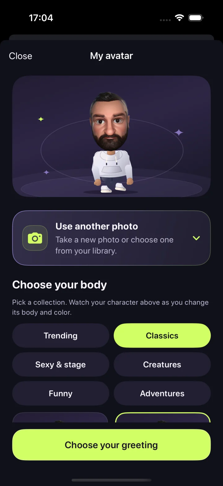
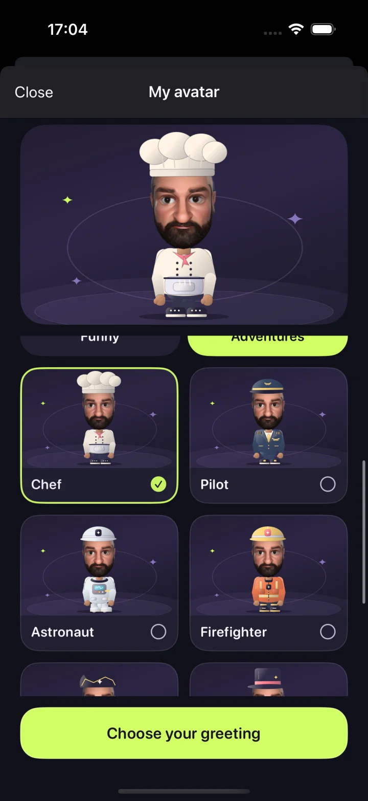
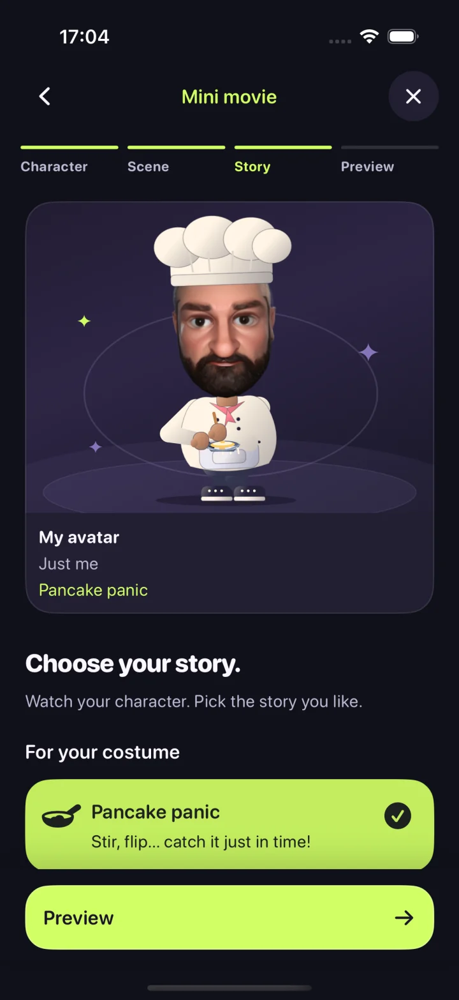
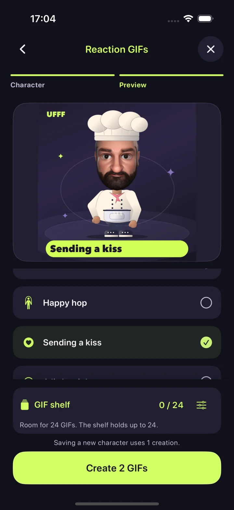
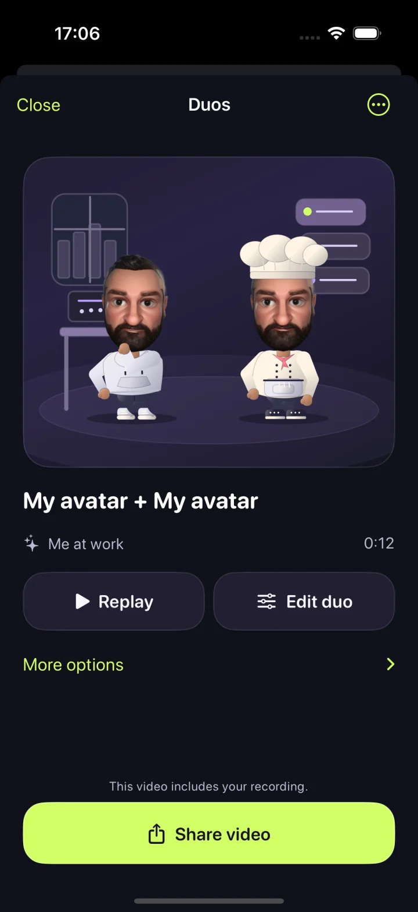

01
Voice video
Give a little line a lot of character. Record up to 8 seconds; keep your voice natural or try a gentle higher or lower effect.
Character → Scene → Action → Voice

Your little cartoon world
Give yourself a new role. Become a chef, do a magic trick, send a kiss. Make little stories and big reactions with a character of your own.
This page previews the upcoming 1.1.1 update. Version 1.0 is currently available on the App Store.

One face. So many roles.
Take a photo or choose one. Pick a body, color and greeting while watching your avatar in a live preview. Save it to your home screen, then choose it again for your next story.
Real app screens. Results vary with your photo.

Three ways to play
Choose your format first. Each path takes you through just the steps you need.
Give a little line a lot of character. Record up to 8 seconds; keep your voice natural or try a gentle higher or lower effect.
Character → Scene → Action → Voice

Send your chef into the kitchen or let your magician do a trick. Choose a scene and story. Add your voice if you like.
Character → Scene → Story → Preview

A hello, a celebration, a wonderfully dramatic reaction. Pick from the full animation collection to make your own silent GIF pack.
Character → Actions → GIF pack


Better together
Bring two saved characters together on the same iPhone. Choose a scene, preview their performance and decide which voices to include. Separate library tabs keep singles and duos easy to find.
Something to celebrate?
Get to know each other.
Three successful creations are free in total across all formats. Then UFFF Forever unlocks unlimited new creations with one purchase.
Failed or cancelled creations don’t use a credit. Apple’s purchase screen shows the current price in your storefront’s currency.
Purchases and free creations ↗Photo and voice processing happen on your device. No account, ads or cloud AI service. You decide what to share.
Explore privacy ↗